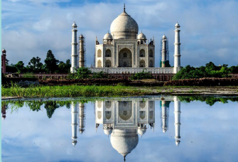
To trace the foundation and establishment of Mughal Empire in India.
To acquaint ourselves with the career and achievements of six great Mughal kings.
To understand the administrative and religious policies of the Mughal rulers.
To gain knowledge about the cultural contributions of Mughals.
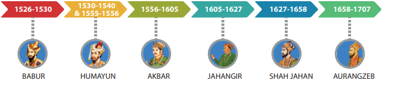
A new empire began in India with the arrival of the Mughal king Babur. Except for the brief reign of Sher Shah of Sur dynasty, the Mughal rule lasted from A.D.(CE) 1526 to 1707. These were the years when the fame of the Great Mughals of India spread all over Asia and Europe. After six Great Mughal Emperors, the empire began to disintegrate.
Ancestry and His Early Career
Zahiruddin Muhammad Babur, popularly known as Babur, was the founder of the Mughal Empire in India. The term ‘Mughal’ can be traced to Babur’s ancestors. Babur was the great grandson of Timur (on his father’s side). On his mother’s side, his grandfather was Yunus Khan of Tashkent, who was known as the GreatKhan of the Mongols and the thirteenth in the direct line of descent of Chengiz Khan. Babur was born on 14 February 1483. He was named Zahir-ud-din (Defender of Faith) Muhammad. He inherited Farghana, a small kingdom in Central Asia, when he was 12 years old. But he was soon driven out from there by Uzbeks. After 10 years of adversity, Babur established himself as the ruler of Kabul.
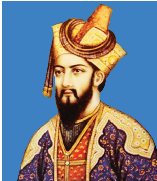
Foundation of the Mughal Empire
In Kabul, Babur set his sights eastward, reminded by the memory of Timur’s Indian invasion . In 1505 the very year after he took Kabul, Babur led his first expedition towards India. Yet he was preoccupied with the Central Asian affairs. He did not have any ambition beyond Punjab till 1524. Then a greater opportunity came knocking . Dilawar Khan, who was Daulat Khan Lodi’s son, and Alam Khan, who was the uncle of Sultan of Delhi, arrived in Kabul to seek Babur’s help in removing Ibrahim Lodi from power . Babur defeated Ibrahim Lodi in the famous Battle of Panipat in 1526 and occupied Delhi and Agra . Following Babur’s victory in this battle, Mughal dynasty came to be established in India with Agra as its capital . Babur’s Military Conquests Babur defeated Rana Sanga and his allies at Khanwa in 1527. He won the war against the chief of Chanderi in 1528 and prevailed over the Afghan chiefs of Bengal and Bihar in 1529 . Babur died in 1530 before he could consolidate his victories. Babur was a scholar in Turkish and Persian languages. He recorded his impressions about Hindustan, its animals, plants and trees, flowers and fruits in his autobiography Tuzuk I Baburi .
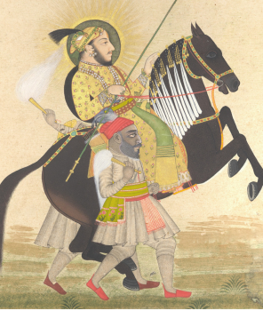
Following the tradition set by Chengiz Khan, who nominated the most deserving among his sons as his heir, Babur chose his favourite and eldest son, Humayun, as his heir .
Humayun, on his accession to the throne, divided his inheritance as per his father’s will and accordingly his brothers, Kamran, Hindal and Askari, got a province each . Yet each of the brothers aspired for the throne of Delhi . Humayun also had other rivals and notable among them was the Afghan Sher Shah Sur, the ruler of Bihar and Bengal . Sher Shah defeated Humayun at Chausa (1539) and again at Kanauj (1540) . Humayun, defeated and overthrown, had to flee to Iran . With the help of the Persian ruler Shah Tahmasp of the Safavid dynasty, Humayun succeeded in recapturing Delhi in 1555. But he died in 1556 when he fell down the stairs of his library in Delhi
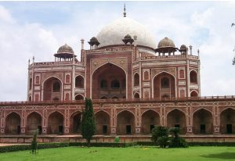
Sher Shah (1540 to 1545)
Sher Shah was the son of the Afghan noble Hasan Suri, ruler of Sasaram in Bihar. After overthrowing Humayun, Sher Shah started the rule of Sur dynasty at Agra. During his brief reign, he built an empire stretching from Bengal to the Indus, excluding Kashmir. He also introduced an efficient land revenue system. He built many roads, and standardised coins, weights and measures.
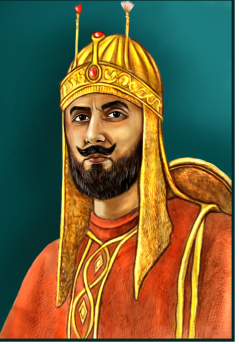
Accession to Throne
After the death of Humayun in 1556, his 14-year-old son Akbar was crowned the King. Humayun’s trusted general Bairam Khan became the regent and ruled on behalf of Akbar, as the latter was a minor.
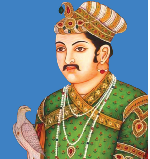
Hemu, a general of Sur dynasty, soon captured Agra and Delhi in 1556. In the same year, Bairam Khan defeated and killed Hemu in the battle at Panipat (Second Battle of Panipat, 1556). As Bairam Khan was murdered in Gujarat, allegedly at the instance of Akbar who could not tolerate his dominance in day-to-day governance of the kingdom, Akbar assumed full control of the government. Akbar brought most of India under his control through conquests and alliances.
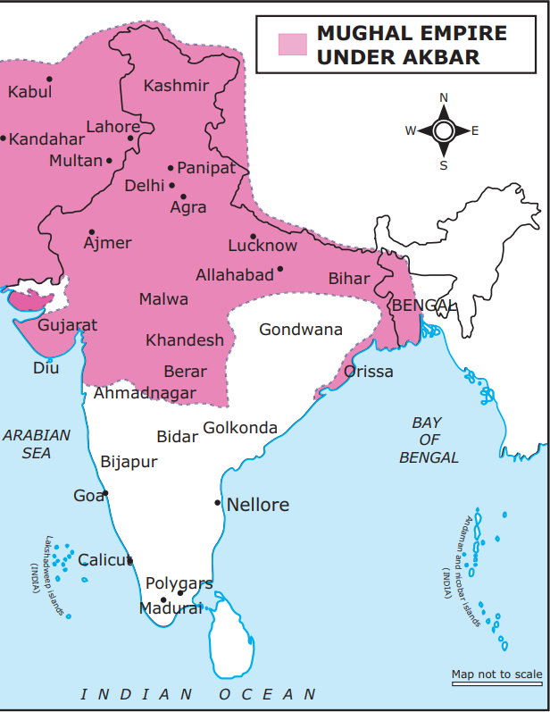
Conquests of Women Rulers
Akbar conquered Malwa and parts of Central India. His defeat of Rani Durgavati, a ruler in the Central Province, is not appreciated, since the brave Rani did him no harm. Yet urged by his ambition to build an empire, Akbar had no consideration for the good nature of the ruler . Similarly, another woman ruler Akbar had to confront in South India was the famous Rani Chand Bibi, regent of Ahmednagar . The fight this woman put up impressed the Mughal army so much that they gave her favourable terms of peace .
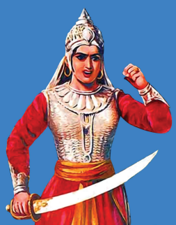
Battle of Haldighati
Akbar defeated Rana Uday Singh of Mewar and captured the fort of Chittoor in 1568 and then Ranthambore in 1569 . In 1576, he won over Uday Singh’s son Rana Pratap at the Battle of
Haldighati . Though defeated, Rana Pratap escaped on his horse, Chetak, and continued his fight, leading a life in the jungle . The memory of this gallant Rajput is treasured in Rajputana, and many a legend has grown around him .
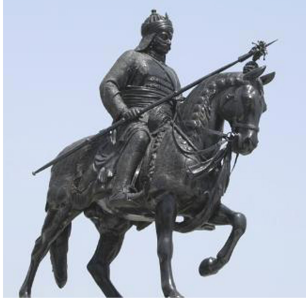
Commercial Access to Arabia, Southeast Asia and China
Akbar’s conquest of Gujarat helped him to establish control over Gujarat’s overseas trade with the Arabs and the Europeans . Akbar’s military campaigns in East Bihar and Odisha and victory over Bengal facilitated access to Southeast Asia and China .
Military Campaigns in the North-West (1585 to 1605)
Among other conquests of Akbar, the important were the campaigns he launched in the North West of India . Akbar added Kandahar, Kashmir and Kabul to the Mughal Empire. His battles in the Deccan led to the annexation of Berar, Khandesh and parts of Ahmednagar . Under Akbar, the Mughal Empire extended from Kashmir in the north to Godavari in the south, and from Kandahar in the west to Bengal in the east . Akbar died in 1605 and his mortal remains were buried at Sikandra near Agra.
Akbar’s Religious Policy
Akbar, realising that the gains of affection would be more enduring than the gains of the sword, made all out efforts to win the goodwill of the Hindu nobles and the Hindu masses . He abolished the jizya (poll tax) on non-Muslims and the tax on Hindu pilgrims . He also married a girl of a noble Rajput family . Later, he married off his son to a Rajput girl as well . He appointed Rajput nobles to important and top positions in his Empire . Raja Man Singh of Jaipur was sent as governor of Kabul once . Akbar treated all the religious groups fairly with generosity of spirit . The Sufi saint Salim Chishti and the Sikh Guru Ramdas received Akbar’s utmost respect and regard . Guru Ramdas was gifted a plot of land in Amritsar, where the Sikh shrine Harmandir Sahib was later built . In Ebaadat Khana, a hall in the new Fatehpur Sikri city, constructed by Akbar, scholars of all religions met for a discourse .
Contributions to culture
Akbar was a great patron of learning . His personal library had more than four thousand
manuscripts . He patronised scholars of all beliefs and all shades of opinions . He extended his benevolence to authors such as Abul Fazl, Abul Faizi and Abdur Rahim Khan I Khanan, the great storyteller Birbal, competent officials like Raja Todar Mal, Raja Bhagwan Das and Raja Man Singh . The great composer and musician Tansen and artist Daswant adorned Akbar’s court as well .
Akbar was succeeded by Prince Salim, his son through a Rajput wife, who was also named Nuruddin Muhammad Jahangir (Conqueror of the World).
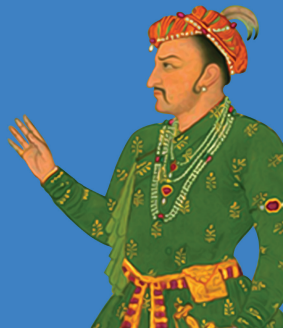
Jahangir was more interested in Jahangir art and painting and gardens and flowers, than in running the government. So Jahangir’s wife, Mehrunnesa, known as Nur Jahan, was the real power behind the throne. Jahangir carried on to some extent his father’s traditions. The toleration of religions of Akbar’s time continued in Jahangir’s time.
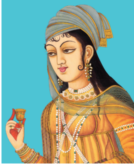
But Jahangir ordered the execution of Sikh leader Guru Arjun (or Arjan) for helping his rebellious son Khusrau, who contested for the throne . This resulted in a prolonged fight between the Sikhs and the Mughals . As a result of this confrontation, the Mughals had to lose control over the trade routes to Afghanistan, Persia and Central Asia . The loss of Kandahar exposed India to invasions from the North-West . Ahmednagar, though conquered by Jahangir, remained a source of trouble throughout his reign. Jahangir granted trading rights to the Portuguese and later to the English . Thomas Roe, a representative of King James first of England, visited Jahangir’s court and this agreement paved the way for the British establishing their first factory in Surat .
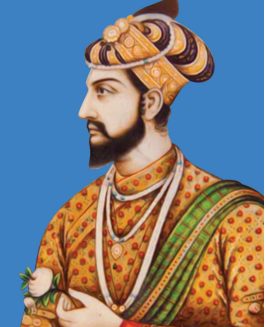
Prince Khurram, after a struggle for power, succeeded Jahangir as Shah Jahan (King of the World). Shah Jahan ruled for thirty years . He led a campaign against Ahmednagar and annexed it in 1632 . Bijapur and Golconda were also conquered later. Some Maratha warriors, notably Shahji Bhonsle (Shivaji’s father), entered the services of the Deccan kingdoms and trained bands of Maratha soldiers to fight against the Mughals . So there was a sustained resistance in the Deccan to the Mughals from the Marathas too. Shah Jahan was intolerant towards other religions than Islam . In his reign came the climax of Mughal splendour, which is detailed in the next part of this lesson . Shah Jahan fell ill in 1657 and a war of succession broke out among his four sons . Aurangzeb emerged successful after killing his three brothers, Dara, Shuja and Murad. Shah Jahan passed the last eight years of his life as a prisoner in the Shah Burj of the Agra Fort .
Aurangzeb, the last of the Great Mughals, started off his reign by imprisoning his old father . He assumed the title Alamgir (the Conqueror of the World). He reigned for 48 years . He was no lover of art like his grandfather Jahangir and architecture like his father Shah Jahan .
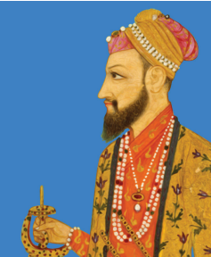
He tolerated no religion excepting Islam. He re-imposed the jizya tax on Hindus and excluded them from office as far as possible . Between 1658 and 1681, Aurangzeb remained in the North and suppressed the revolt of Bundelas, Jats, Satnamis and Sikhs. Aurangzeb’s expansion in the North-East resulted in a war with the Ahoms of Kamarupa (Assam) . The kingdom came under repeated attacks of the Mughals, but it could not be subdued totally.
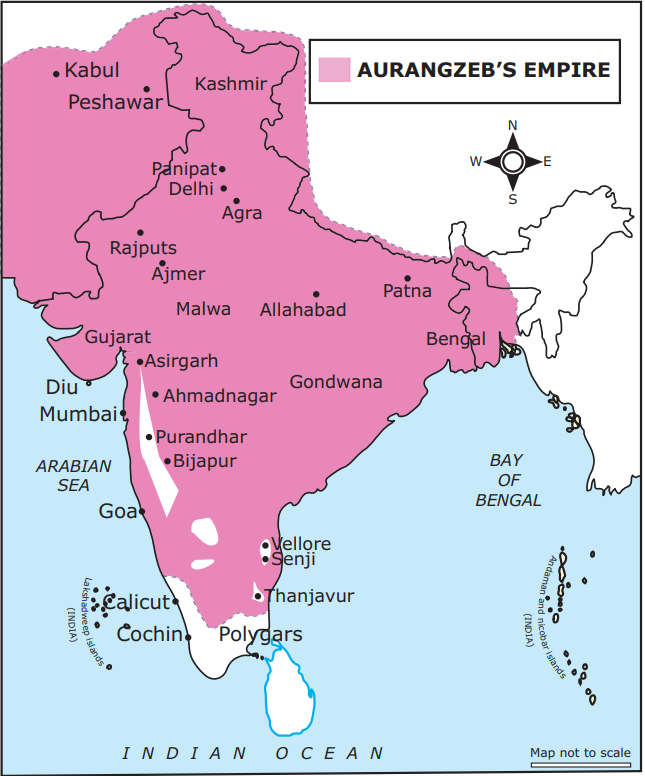
Relationship with Rajputs and Marathas
Aurangzeb’s hostility towards Rajputs led to prolonged wars with them. To make matters worse, his rebellious son, Prince Akbar, joined the forces of Rajputs and created troubles to him. Prince Akbar entered into a pact with Shivaji’s son Shambuji in the Deccan. So Aurangzeb had to march to the Deccan in 1689. In the Deccan, Aurangzeb brought Bijapur and Golconda into submission. Shivaji had carved out a kingdom, proclaiming himself the Emperor of Maratha State (1674). Aurangzeb could not stop the rise of Shivaji in the southwest. But he vanquished Shivaji’s son and successor Shambuji, who was captured and executed by him. Aurangzeb remained in the Deccan until his death in 1707, at the age of nearly 90. By the end of Aurangzeb’s rule, the British had firmly established their trade centres at Madras (Chennai), Calcutta (Kolkata) and Bombay (Mumbai). The French had their main trade centre in Pondicherry (Puducherry).
The Mughal Administration
Central Administration
The Mughals provided a stable administration in larger parts of India . The Emperor was the supreme head of the Mughal administrative system . He was the law maker, the chief executive, the commander-in-chief of the army and the final dispenser of justice . He was assisted by a council of ministers . The most important officials were the Wakil (Prime Minister) and Wazir or diwan (in charge of the revenue and expenditure). Mir Bhakshi was in charge of the army . The Mir Saman looked after the royal household. The Qazi was the Chief Judge. Sadr-us-Sudr was minister for enforcing Islamic law (Sharia) .
Provincial Administration
The empire was divided into several Subhas (provinces). Each Subha was under the control of an officer called Subedar . The Subhas were further divided into districts called Sarkars . The Sarkars were subdivided into Parganas. A group of villages (Gramas) formed a Pargana .
Local Administration
The towns and cities were administered by Kotwals . Kotwals maintained law and order . The administration of villages was left in the hands of local village panchayats (informal institution of justice in villages) . The Panchayatdars (jury) dispensed justice .
Army
The Mughal army comprised infantry, cavalry, war elephants and artillery . The Emperor maintained a large number of trained and well-armed bodyguards and palace guards .
Mansabdari System
Akbar introduced the Mansabdari system . According to this system, the nobles, civil and military officials were combined to form one single service . Everyone in the service was given a mansab, meaning a position or rank . A Mansabdar was a holder of such a rank. Mansabdar rank was dependent on Zat and Sawar . The former indicated one’s status . Sawar was the number of horses and horsemen he had to maintain . His salary was fixed on the basis of the number of soldiers each Mansabdar received ranging from 10 to 10,000 . The Mansabdars were paid high salary by the Emperor. Before receiving the salary, a Mansabdar had to present his horsemen for inspection. Their horses were branded to prevent theft . The Emperor could use the troops maintained by a Mansabdar whenever he wished . The rank of Mansabdar was not hereditary during Akbar’s time . After him, it became hereditary .
Land Revenue Administration
Land revenue administration was toned up during the reign of Akbar. Raja Todar Mal, Revenue Minister of Akbar, adopted and refined the system introduced by Sher Shah. Todar Mal’s zabt system was put in place in the north and north-western provinces. According to this system, after a survey, lands were classified according to the nature and fertility of the soil. The share of the state was fixed at one-third of the average produce for 10 years. During the reign of Shah Jahan, the zabt or zabti system was extended to the Deccan provinces .
The Mughal emperors enforced the old iqta system, renaming it jagir . It is a land tenure system developed during the period of Delhi Sultanate . Under the system, the collection of the revenue of an area and the power of governing it were bestowed upon a military or civil official now named Jagirdar . Every Mansabdar was a Jagirdar if he was not paid in cash . The Jagirdar collected the revenue through his own officials . The Amal Guzar or the revenue collector of the district was assisted by subordinate officers like the Potdar, the Qanungo, the Patwari and the Muqaddams .
Those appointed to collect the revenue from the landholders were called zamindars . Zamindars collected taxes and maintained law and order with the help of Mughal officials and soldiers . The local chieftains and little kings were also called zamindars . But at the end of the sixteenth century, the zamindars were conferred hereditary rights over their zamin . The zamindar was empowered to maintain troops for the purpose of collecting revenue . The emperor granted lands to scholars, holy men and religious institutions . These lands called suyurghal were tax-free .
Religious Policy
The Mughal emperors were the followers of Islam . Akbar was very liberal in his religious policy . In Akbar’s court, the Portuguese missionaries were great favourites . Akbar tried to include the good principles in all religions and formulated them into one single faith called Din-Ilahi (divine faith) . Jahangir and Shah Jahan also followed the policy of Akbar . Aurangzeb rejected the liberal views of his predecessors . As we pointed out earlier, he re-imposed the jizya and pilgrim tax on the Hindus . His intolerance towards other religions made him unpopular among the people .
Art and Architecture
Babur introduced the Persian style of architecture to India by building many structures at Agra, Biana, Dholpur, Gwalior and Kiul (Aligarh), but only a few of them exist today. Humayun’s palace in Delhi, Din-i-Panah, was probably destroyed by Sher Shah Sur who built the Purana Qila in its place . The most prominent monument of Sher Shah’s reign was his mausoleum built at Sasaram in Bihar .
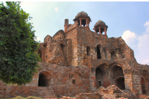
The Diwan i Khas, Diwan i Am, Panch Mahal (pyramidal structure in five stories), Rang Mahal, Salim Chishti’s Tomb and Buland Darwaza were built during Akbar’s time . Jahangir completed Akbar’s tomb at Sikandara and the beautiful building containing the tomb of Itmad ud daula, father of Nur Jahan, at Agra .
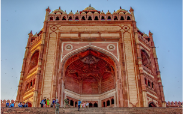
Shah Jahan’s time witnessed the climax of Mughal splendour . The famous peacock throne, covered with expensive jewels, was made for the Emperor to sit on . Then rose the world famous Taj Mahal, by the side of the Yamuna river at Agra . Besides Taj, he built the Moti Masjid, the pearl mosque at Agra, the great Jama Masjid of Delhi and the Diwan-i-Khas and Diwan-i-Am in his palace in Delhi .
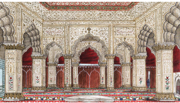
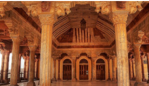
During Aurangzeb’s reign, architecture did not receive much patronage . The Bibi Ka Maqbara in Aurangabad, a mausoleum built by his son Prince Azam Shah as a loving tribute to his mother in the late seventeenth century, is, however, worth mentioning .
Red Fort
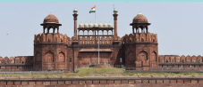
Red Fort, also called Lal Qila, in Delhi was the residence of the Mughal emperors. Constructed in 1639 by Emperor Shah Jahan as the palace of his fortified capital Shajahanabad. The Red Fort is named for its massive enclosing walls of red sandstone.
Babur founded the Mughal Empire in 1526 after defeating Ibrahim Lodi in the Battle of Panipat (1526). Humayun’s unsettled conditions and Sher Shah’s victory over him in the Battle of Kanauj; Sher Shah’s efficient land revenue administration; and the introduction of coin system and standardised weights and measures are dealt with in this chapter.
Humayun’s retrieval of the Mughal Empire and his untimely death leading to the accession of his son Akbar, with Bairamkhan as the regent, and defeating Hemu, the great general of Sur dynasty, in the Battle of Panipat (1556) are described .
Akbar’s military conquests as well as his religious policy are explained .
Jahangir’s disinterest in state governance leading to dominance of his wife Nur Jahan in the Mughal Court is elaborated upon .
Shahjahan extending Mughal rule in the Deccan and the resultant conflict with Marathas are analysed .
Aurangzeb’s conquests helped to expand the Mughal Empire, but his policies against Rajputs, Marathas and Sikhs provoked resistance from them, paving the way for its downfall .
Mughal administration headed by the Emperor, who in turn was assisted by various officials, is described. Akbar’s Mansabdari system and the land revenue policy formulated by Raja Todar Mal according to the zabt system are examined .
Mughals’ contributions to culture, notably to art and architecture, are highlighted .
GLOSSARY |
|
|
|
1 |
Expedition |
A journey undertaken with the purpose of war |
போர்பயணம் |
2 |
Prolonged |
lengthy |
நீண்ட |
3 |
subdued |
conquered |
அடக்குதல் |
4 |
Rebellious |
Showing a desire to resist authority |
கலகக்கார |
5 |
Bestowed |
awarded |
மதிப்பளித்தல் |
6 |
Hereditary |
Inheritance of a title, office, or right |
பாரம்பரிய |
7 |
Enduring |
Lasting over a period of time |
நீடித்த அல்லது நீடித்த காலம் |
1 . Satish Chandra, History of Medieval India 800-1700, Orient Black swan, New Delhi, 2007.
2 . J L Mehta, Advanced Study in the history of Medieval India: Mughal Empire, Volume 2 , 15 26 to-17 not 7, Sterling Publishers, 2011.
3 . Harbans Mukhia, The Mughals of India, Blackwell Publishing, New Delhi, 2009.
4 . Abraham Eraly, The Emperors of Peacock Throne, Penguin, 2007.
1 . Who introduced the Persian style of architecture in India?
a) Humayun
b) Babur
c) Jahangir
d) Akbar
2 . In which battle did Akbar defeat Rana Pratap?
a) Panipat
b) Chausa
c) Haldighati
d) Kanauj
3 . Whose palace in Delhi was destroyed by Sher Shah?
a) Babur
b) Humayun
c) Ibrahim Lodi
d) Alam Khan
4 . Who introduced Mansabdari system?
a) Sher Sha
b ) Akbar
c) Jahangir
d) Shah Jahan
5 . Who was the revenue minister of Akbar?
a) Birbal
b) Raja Bhagwan Das
c) Raja Todarmal
d) Raja Man Singh
1 . DASH was the name of the horse of Rana Pratap.
2 . Dash was a hall at FatehpurSikri where scholars of all religions met for a discourse.
3 . The Sufi saint who received Akbar’s utmost respect was DASH.
4 . During the reign of dash the Zabti system was extended to the Deccan provinces.
5 . DASH were tax-free lands given to scholars and religious institutions.
1. Babur – Ahmednagar
2 . Durga vati - Jaipur
3 . Rani Chand Bibi – Akbar
4 . Din eIahi - Chanderi
5 . Raja Man Singh – Central Province
1. Babur inherited Farghana, a small kingdom in Central Asia.
2. Humayun succeeded in recapturing Delhi in 1565.
3. Aurangzeb married a girl of a notable Rajput family.
4. Jahangir ordered execution of Sikh leader Guru Arjun for helping his son Khusrau.
5. During Aurangzeb’s reign, architecture received much patronage.
1 . Assertion (A): The British established their first factory at Surat .
Reason (R): Jahangir granted trading rights to the English .
a) Reason is the correct explanation of Assertion.
b) Reason is not the correct explanation of Assertion.
c) Assertion is wrong and Reason is correct.
d) (Assertion) and (Reason) are wrong
2 . Assertion (A): Aurangzeb’s intolerance towards other religions made him unpopular among people .
Reason (R): Aurangzeb re-imposed the jizya and pilgrim tax on the Hindus .
a) Reason is the correct explanation of Assertion.
b) Reason is not the correct explanation of Assertion.
c) Assertion is wrong and Reason is correct.
d) (Assertion) and (Reason) are wrong.
a, Kamran was the son of Afghan noble, Hasan Suri, ruler of Sasaram in Bihar.
b, Akbar abolished the jizya poll tax on non-Muslims and the tax on Hindu pilgrims.
c, Aurangzeb acceded the throne after killing his three brothers.
d, Prince Akbar entered into a pact with Shivaji’s son Shambuji in the Deccan.
(a) (2) and (3) are correct
(b) ( 3) and (4) are correct
(c) (3 ) and (4 ) are correct
(d) (3), (4) and (1) are correct
(a) Battle of Khanwa
(b) Battle of Chausa
(c) Battle of Kanauj
(d) Battle of Chanderi
(a) Sarkars
(b) Parganas
(c) Subhas
Match the father and son
Father |
Son |
1. Father Akbar |
Son Dilawar Khan |
2. Father Daulat Khan Lodi |
Son Rana Pratap |
3. Father Hasan Suri |
Son Humayun |
4. Father Babur |
Son Sher Shah |
5. Father Uday Singh |
Son Jahangir
|
1. Write the circumstance that led to the Battle of Panipat in 1526.
2. Mention the Humayun recapture the Delhi throne in 1555
3. Write a note on Mansabdari system.
1. Describe the land revenue administration of the Mughals.
2. Estimate Akbar as a patron of learning.
1. Shah Jahan’s time witnessed the climax of Mughal splendour. Support this statement in comparison with the times of other Mughal rulers.
Map
Mark the extent of Mughal Empire during the reign of Akbar and Aurangzeb with special focus on important battle fields.
Collect information about the scholars in Akbar’s court and conduct a mock Ebadat khana in the class.